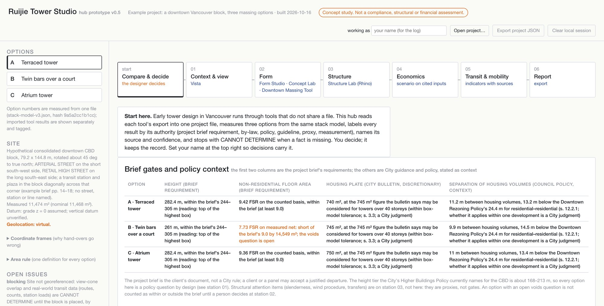

These are study tools for early design. They won't tell you if a tower complies, size its structure or prove it's feasible, and each one shows where its numbers come from.
We link the tools you already use and leave the decisions to you.
We mapped how a Vancouver high-rise gets designed today and where that process tends to break. The workbench is built around those spots.


How a tower is designed today
Ten steps from brief to City decision, with a lot of going back and forth between people and tools.


The ten steps in detail
Where today's tools stop
Each tool covers part of the process, and none of them gets as far as the City enquiry or decision.
All tool cards
Who does what
AI helps with the wording, code does the checking, and people make the calls.
AI can
- Turn what you ask into a structured request
- Propose a revision within allowed limits
- Draft an explanation with its sources
Code checks
- Units, coordinate frame, source date
- Geometry and arithmetic, recomputed
- Every number has a citation, or it stops
People decide
- What the brief is and what matters
- Which option goes forward
- What is frozen and submitted
Seven decisions that stay with people Tap one to read it.
How our workbench runs
The steps run in a fixed order, and code picks what runs next.
Each AI step, its check, and who closes the loop
| AI step | Pattern | Check that cannot be skipped | Who closes the loop |
|---|---|---|---|
| Parse intent into fields | Chain + router | PreToolUse: schema, range, units, frame, date | Harness blocks; a person resolves ambiguity |
| Retrieve source passages | Fixed approved route | Identity, version, locator, authority | Planner confirms it applies |
| Call and normalise tools | Fixed router | PostToolUse: schema, IDs, units, hash, recompute | Harness retries up to 3, then stops |
| Propose alternatives | Evaluator–optimiser | Geometry and arithmetic rejection | Harness retries; architect changes the rules |
| Explain the comparison | Evaluator–optimiser | Stop hook: numbers, citations, basis, no verdict | AI revises up to 3; a person approves |
| Reframe or select | None (person only) | Person, basis, evidence and version logged | The project team |
First attempt: hub v0.5
It reads real exports from our tools, measures three options with the same area rule, and logs every decision.
run on 16 Oct 2026

How this research was made
A GPT model wrote the drafts, and Claude Opus 5.5 reviewed them in two rounds before we published.
- PlanQuestions from the Assignment 2 brief
- DraftGPT (gpt-5.6-sol) · 53 sources
- Peer reviewClaude Opus 5.5 · method and sources
- Revise26 findings applied
- GateConditional pass · final fixes
60 sources: City of Vancouver documents, 14 peer-reviewed papers, vendor documentation and our own files. 59 opened and checked. The City's new design guidelines take effect 27 October 2026; the floorplate figures will be rechecked then.
Tell us what you think
We'll use what you tell us to decide what to fix next.
Photo: Kyle Pearce / DIY Genius, CC BY-SA 2.0It takes about five minutes, and most questions are just taps. You stay anonymous unless you leave your name. We read every response and keep a log of what we change because of it. At the end, your answers open in our Google Form to submit.
Last step: send your answers to Ruijie and Sinnie. Your answers are already written into an email. Pick how you send email, then press Send.
To: liuruij6@gmail.com, sinniechoi18@gmail.com. If nothing opens, copy the addresses and the text below into any email.
No email? Use our Google Form instead: your answers are filled in, so just press Submit there.
Open the form ↗If the form opens empty, paste the text below into it.
Copy the text below if you want to keep your answers.
Visible only to Ruijie, Sinnie and anyone given Editor access.
What would help you design a tower in Vancouver?
You can edit this page. Use Edit beside a heading; your text is saved for everyone who opens it.


What we read
Briefs, City rules and research behind the tools